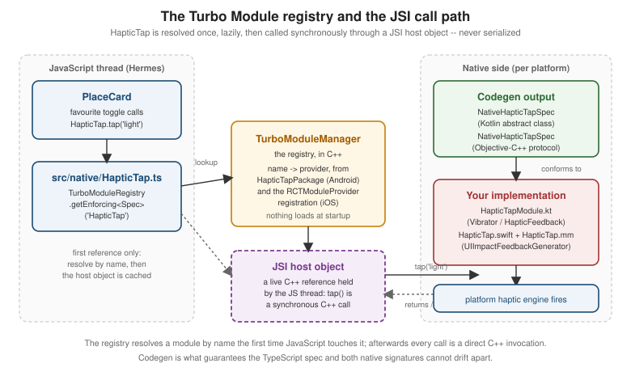

Native Modules and Components
|
This content was generated with the assistance of AI and should be verified against the official documentation before being relied on in production. |
React Native Architecture Under the Hood introduced
Turbo Native Modules and Codegen as architecture: a native capability exposed to JavaScript as a typed JSI host
object, generated from a single TypeScript declaration. This page is the practical counterpart — how to decide
that Places genuinely needs native code at all, and then how to write it end to end on both platforms:
the spec, the codegenConfig entry, the generated interfaces, the Kotlin and Swift/Objective-C++
implementations, a Fabric Native Component when the capability is a view rather than a function, how to ship
any of it as a reusable library, and the Expo Modules API as the framework-native alternative that replaces most
of that machinery with a Swift/Kotlin DSL. Everything here assumes React Native 0.87 on the New Architecture,
where Turbo Native Modules and Fabric are the only supported way to write new native code.
When Native Code Is Necessary
Writing native code is the most expensive option available to a React Native app: it doubles the implementation (Kotlin and Swift), takes the capability out of over-the-air update range, and means anyone building the project needs a working Android and Xcode toolchain. It is worth reaching for only after the cheaper options have actually been ruled out, in roughly this order:
| Option | When it is the right answer |
|---|---|
A Core Component or built-in API |
The capability already ships with React Native — |
An Expo SDK module |
Expo SDK 57 already wraps the capability ( |
A community library |
A maintained package on the React Native Directory exposes it, already migrated to the New Architecture. The cost is a dependency rather than a native codebase. |
Platform-specific JavaScript |
The difference is behavioural, not capability-level — |
Your own native module |
The capability exists in a platform SDK (or a vendor SDK, or an existing in-house native library) that nothing on the JavaScript side exposes, or the work must run natively for performance or threading reasons. This is the case this page covers. |
Places reaches the last row exactly once. Its favourite toggle wants a specific, short haptic impact whose
style the app chooses per interaction — something Vibration.vibrate() cannot express (it only knows
durations) and that expo-haptics exposes only through its own fixed enumeration. That is the whole
justification for HapticTap: a single method, three styles, mapped onto iOS’s UIImpactFeedbackGenerator and
Android’s haptic feedback constants. A native module that small is the ideal shape — a thin, typed surface over
one platform API, with no business logic on the native side of the boundary.
The Turbo Native Module Workflow
A Turbo Native Module is declared once, in TypeScript, and everything native is generated from or checked against that declaration. The workflow has five steps, and the only hand-written artefacts are the spec at the start and the platform implementations at the end:
TypeScript spec: interface Spec extends TurboModule"] --> B["codegenConfig in package.json
name, type: 'modules', jsSrcsDir, android.javaPackageName"] B --> C["Codegen runs at build time
(Gradle task on Android, script phase on iOS)"] C --> D["Generated Kotlin/Java
abstract class NativeHapticTapSpec"] C --> E["Generated Objective-C++
protocol NativeHapticTapSpec"] D --> F["HapticTapModule.kt implements it,
registered by HapticTapPackage"] E --> G["HapticTap.swift + HapticTap.mm conform to it,
registered as an RCTModuleProvider"] F --> H["TurboModuleRegistry.getEnforcing<Spec>('HapticTap')
resolves a JSI host object at first use"] G --> H H --> I["PlaceCard's favourite toggle calls tap('light')"]
Step 1: The TypeScript Spec
The spec is an ordinary TypeScript file that exports an interface extending TurboModule and, as its default
export, the result of looking that module up in the registry. It is the single source of truth: Codegen parses
it, TypeScript type-checks every call site against it, and the native implementations are forced to match it.
// src/native/HapticTap.ts
import type { TurboModule } from 'react-native';
import { TurboModuleRegistry } from 'react-native';
export type HapticStyle = 'light' | 'medium' | 'heavy';
export interface Spec extends TurboModule {
tap(style: HapticStyle): void;
}
export default TurboModuleRegistry.getEnforcing<Spec>('HapticTap');Three details carry more weight than their size suggests. The interface must be named Spec and the file must
be named Native<Something>.ts or be pointed at explicitly by jsSrcsDir — Codegen discovers specs by
convention, and a file it does not recognise silently generates nothing. getEnforcing<Spec> throws at first
access if the native side never registered a module under that name, which turns a missing or misconfigured
native implementation into an immediate, named error instead of an undefined method call somewhere deep in a
component; TurboModuleRegistry.get<Spec> is the nullable variant, for a module that is genuinely optional on
one platform. And the types Codegen accepts are a deliberately restricted subset — boolean, number,
string, string-literal unions, arrays, object literals, Promise<T>, and callbacks — because every one of
them has to map onto something expressible in Kotlin and Objective-C++. A TypeScript type Codegen cannot map
fails the build rather than degrading at runtime.
Note also that the spec imports TurboModule and TurboModuleRegistry from the package root — react-native — not from a deep path inside it. Deep imports are not part of the Strict TypeScript API that React Native 0.87
publishes, and code relying on them can break on any minor upgrade; see
TypeScript in React Native.
Step 2: codegenConfig in package.json
Codegen is driven by a codegenConfig block in the project’s (or library’s) package.json. It tells the build
where the specs live and what to generate from them:
{
"name": "places",
"version": "1.0.0",
"codegenConfig": {
"name": "PlacesSpecs",
"type": "modules",
"jsSrcsDir": "src/native",
"android": {
"javaPackageName": "com.irurueta.places.nativemodules"
}
}
}name becomes the name of the generated native library (the Gradle module and the iOS pod target); type is
modules for Turbo Native Modules, components for Fabric Native Components, or all when a package ships
both; jsSrcsDir is the directory Codegen scans for specs, relative to the package.json; and
android.javaPackageName is the package the generated Java/Kotlin lands in. Codegen then runs automatically as
part of each platform’s build — a Gradle task on Android, a script build phase (installed by pod install) on
iOS — so there is no separate generation command to remember in normal development. npx react-native codegen
runs it on demand when you want to inspect the output before building.
Step 3: What Codegen Produces
Codegen never writes into your source tree. Its output lands in the build directories — android/app/build/generated/source/codegen/ and ios/build/generated/ios/ — and is regenerated from the spec
on every build, which is exactly why the JavaScript-facing types and the native signatures cannot drift apart.
For HapticTap it produces:
-
On Android, an abstract class
NativeHapticTapSpecextendingReactContextBaseJavaModuleand implementingTurboModule, with an abstracttap(String style)your module must override, plus the JSI binding glue in C++ that dispatches a JavaScript call to it. -
On iOS, an Objective-C protocol `NativeHapticTapSpec` inheriting from `RCTBridgeModule` and `RCTTurboModule` with a `- (void)tap:(NSString *)style` requirement, plus the matching C
TurboModulesubclass that routes JSI invocations to whatever conforms to that protocol.
Both are compile-time contracts. Rename tap in the spec without touching the native side and the Android build
fails on an unimplemented abstract member while the iOS build fails on an unsatisfied protocol requirement — which is the entire point of the exercise.
Step 4: The Android Implementation (Kotlin)
The Kotlin module extends the generated spec class and does the actual work. getName() must return the exact
string the JavaScript side passes to getEnforcing — that string is the registry key:
// android/app/src/main/java/com/irurueta/places/nativemodules/HapticTapModule.kt
package com.irurueta.places.nativemodules
import android.os.Build
import android.os.VibrationEffect
import android.os.Vibrator
import android.os.VibratorManager
import com.facebook.react.bridge.ReactApplicationContext
import com.facebook.react.module.annotations.ReactModule
import com.irurueta.places.nativemodules.NativeHapticTapSpec
@ReactModule(name = HapticTapModule.NAME)
class HapticTapModule(reactContext: ReactApplicationContext) : NativeHapticTapSpec(reactContext) {
override fun getName(): String = NAME
override fun tap(style: String) {
val amplitude = when (style) {
"light" -> 60
"medium" -> 140
"heavy" -> 255
else -> 140
}
val durationMs = if (style == "heavy") 25L else 12L
vibrator()?.vibrate(VibrationEffect.createOneShot(durationMs, amplitude))
}
private fun vibrator(): Vibrator? {
val context = reactApplicationContext
return if (Build.VERSION.SDK_INT >= Build.VERSION_CODES.S) {
val manager =
context.getSystemService(VibratorManager::class.java) ?: return null
manager.defaultVibrator
} else {
context.getSystemService(Vibrator::class.java)
}
}
companion object {
const val NAME = "HapticTap"
}
}A module is only reachable once a ReactPackage advertises it. Under the New Architecture the package
implements BaseReactPackage (or TurboReactPackage), which is what makes loading lazy: the registry asks
getModule(name, context) for a module only when JavaScript first resolves that name, and
getReactModuleInfoProvider() describes what the package can supply without instantiating anything.
// android/app/src/main/java/com/irurueta/places/nativemodules/HapticTapPackage.kt
package com.irurueta.places.nativemodules
import com.facebook.react.BaseReactPackage
import com.facebook.react.bridge.NativeModule
import com.facebook.react.bridge.ReactApplicationContext
import com.facebook.react.module.model.ReactModuleInfo
import com.facebook.react.module.model.ReactModuleInfoProvider
class HapticTapPackage : BaseReactPackage() {
override fun getModule(name: String, reactContext: ReactApplicationContext): NativeModule? =
if (name == HapticTapModule.NAME) HapticTapModule(reactContext) else null
override fun getReactModuleInfoProvider(): ReactModuleInfoProvider = ReactModuleInfoProvider {
mapOf(
HapticTapModule.NAME to ReactModuleInfo(
HapticTapModule.NAME,
HapticTapModule.NAME,
false, // canOverrideExistingModule
false, // needsEagerInit
false, // isCxxModule
true // isTurboModule
)
)
}
}The package is then added to the host’s package list in MainApplication.kt (alongside the autolinked ones), and
the Kotlin language features used above — when expressions, object companions, nullable types — are covered
in Kotlin for Android.
Step 5: The iOS Implementation (Swift and Objective-C++)
iOS needs two files, because Codegen emits an Objective-C protocol and Swift cannot conform to an
Objective-C protocol directly. The idiomatic split is to write the real logic in Swift and keep a thin
Objective-C file that conforms to the generated protocol and forwards into it. For how Swift, Objective-C and
Objective-C coexist in one Xcode target in general — bridging headers, the generated -Swift.h header and
@objc — see Mixing Swift, Objective-C and C++ in an App.
// ios/Places/HapticTap.swift
import UIKit
@objc(HapticTapImpl)
public class HapticTapImpl: NSObject {
@objc
public static func tap(_ style: String) {
let feedbackStyle: UIImpactFeedbackGenerator.FeedbackStyle
switch style {
case "light": feedbackStyle = .light
case "heavy": feedbackStyle = .heavy
default: feedbackStyle = .medium
}
DispatchQueue.main.async {
let generator = UIImpactFeedbackGenerator(style: feedbackStyle)
generator.prepare()
generator.impactOccurred()
}
}
}// ios/Places/HapticTap.mm
#import <Foundation/Foundation.h>
#import <PlacesSpecs/PlacesSpecs.h>
#import "Places-Swift.h" // generated Swift interop header
@interface HapticTap : NSObject <NativeHapticTapSpec>
@end
@implementation HapticTap
RCT_EXPORT_MODULE()
- (void)tap:(NSString *)style
{
[HapticTapImpl tap:style];
}
- (std::shared_ptr<facebook::react::TurboModule>)getTurboModule:
(const facebook::react::ObjCTurboModule::InitParams &)params
{
return std::make_shared<facebook::react::NativeHapticTapSpecJSI>(params);
}
@endRCT_EXPORT_MODULE() with no argument derives the registry name from the class name — HapticTap, matching
getEnforcing<Spec>('HapticTap'). getTurboModule: is what hands the runtime the Codegen-generated JSI binding
class for this module; every Objective-C Turbo Module implements it, and it is boilerplate you copy rather
than write. The `.mm` extension (rather than `.m`) is mandatory: the generated headers are C.
The Swift reference and
the Objective-C reference cover both languages, including the
@objc/NS_SWIFT_NAME interop rules that make the bridging header above work.
On a project using the app template’s RCTAppDelegate, an app-local module in the ios/Places target is picked
up automatically once the file is in the Xcode target. A module shipped as a library instead registers itself
through the autolinking manifest — covered under packaging, below.
Step 6: Calling It from PlaceCard
On the JavaScript side there is nothing module-specific left to do: the default export of the spec file is the typed module. `PlaceCard’s favourite toggle calls it directly, alongside the state update it already performed:
// src/features/places/components/PlaceCard.tsx (excerpt -- haptic feedback on the favourite toggle)
import { Pressable, Text } from 'react-native';
import HapticTap from '../../../native/HapticTap';
import { useFavouritesStore } from '../store/useFavouritesStore';
// inside PlaceCard, the nested favourite-toggle Pressable:
<Pressable
onPress={() => {
HapticTap.tap(place.favourite ? 'light' : 'medium');
onToggleFavourite(place.id);
}}
hitSlop={8}
accessibilityRole="button"
accessibilityLabel={place.favourite ? 'Remove from favourites' : 'Add to favourites'}
accessibilityState={{ selected: place.favourite }}
>
<Text style={styles.favouriteIcon}>{place.favourite ? '★' : '☆'}</Text>
</Pressable>HapticTap.tap('light') is fully typed: passing 'soft' is a compile error, because HapticStyle is a
string-literal union in the spec. The call is synchronous — it returns as soon as the native method has been
invoked, with no promise to await — which is exactly what a JSI-backed void method buys and what the legacy
bridge could never offer.
Promises, Events, and Constants
tap() is the simplest possible shape. Three richer shapes cover almost everything else a module needs:
Promises. A spec method typed Promise<T> becomes a method taking a promise pair on the native side — Promise on Android (resolve/reject), RCTPromiseResolveBlock/RCTPromiseRejectBlock on iOS. This is the
right shape for anything asynchronous or fallible, because a rejection surfaces in JavaScript as a normal
thrown error you can try/catch:
// src/native/HapticTap.ts (a richer spec: capability query, asynchronous because it may hit a system service)
export interface Spec extends TurboModule {
tap(style: HapticStyle): void;
isSupported(): Promise<boolean>;
}override fun isSupported(promise: Promise) {
try {
promise.resolve(vibrator()?.hasVibrator() == true)
} catch (e: Exception) {
promise.reject("E_HAPTIC_UNAVAILABLE", e)
}
}Events. For native-initiated notifications there is no JavaScript callback to hold; the module emits events
and JavaScript subscribes. Declare addListener(eventName: string): void and
removeListeners(count: number): void in the spec (Codegen requires both for an event-emitting module), emit
with emitDeviceEvent from the Kotlin module or emitOnChange-style generated helpers, and subscribe in
JavaScript through NativeEventEmitter. Places does not need this for haptics, but it is the shape a
location-tracking or download-progress module would take.
Constants. A getConstants() method in the spec returns a value read once, synchronously, at module
initialisation — suited to genuinely static facts (a platform SDK version, a device capability flag) and
actively unsuitable for anything that can change while the app runs, since JavaScript will keep the first value
forever. In practice a Promise-returning getter is the better default, and getConstants() is worth using
only when a value must be available synchronously during the first render.
The Turbo Module Registry and the JSI Call Path
What actually happens the first time PlaceCard calls HapticTap.tap('light') is worth following once, because
it explains both the lazy-loading behaviour and why the call is synchronous:

The registry (TurboModuleManager) holds a map from module name to provider, not to instantiated modules.
Nothing native is constructed at startup: the module is created the first time JavaScript resolves its name,
and from then on the JavaScript side holds a JSI host object — a live C++ reference — so subsequent calls skip
the registry entirely. That is the whole difference from the legacy bridge, where every registered native module
was eagerly initialised during startup whether or not the app ever used it, and every call afterwards was a
serialized, asynchronous message.
Cross-Platform C++ Modules
When a capability has no platform-specific dependency at all — a parser, a cryptographic routine, a
computation, or an existing C library you want to reuse -- a **C Turbo Native Module** lets you write the
implementation once and have both platforms load the same code. The spec is the same TypeScript file; what
changes is that Codegen generates a single C++ base class instead of per-platform interfaces, and the
ReactModuleInfo above is registered with isCxxModule = true.
// shared/NativePlaceDistance.h
#pragma once
#include <AppSpecsJSI.h>
#include <memory>
#include <string>
namespace facebook::react {
class NativePlaceDistance : public NativePlaceDistanceCxxSpec<NativePlaceDistance> {
public:
NativePlaceDistance(std::shared_ptr<CallInvoker> jsInvoker);
// Great-circle distance in metres between two Places coordinates.
double distanceBetween(jsi::Runtime &rt, double lat1, double lon1, double lat2, double lon2);
};
} // namespace facebook::reactThe same .cpp file is compiled into the Android build through CMake (CMakeLists.txt in
android/app/src/main/jni) and into the iOS build as a source file on the app or pod target, with
android.cxxModuleHeaderName added to codegenConfig so Codegen knows which header to include. The trade-off
is the obvious one: no access to any platform API, a build setup that is harder to debug than Kotlin or Swift,
and C++ as the maintenance language — worth it for shared algorithmic code or an existing native library, not
for a thin wrapper over a platform SDK the way HapticTap is.
Fabric Native Components
A Turbo Native Module exposes functions. When what you need is a real native view participating in
Flexbox layout — a map, a video surface, a platform chart, a camera preview — the counterpart is a Fabric
Native Component, declared with codegenNativeComponent and rendered as an ordinary JSX element.
Declaring the Component
The spec is again TypeScript, and again drives Codegen. The prop types come from React Native’s own Codegen-aware type aliases (imported from the package root), because a prop has to be expressible in the shadow tree:
// src/native/PlaceMapViewNativeComponent.ts
import type { ComponentRef } from 'react';
import type { DirectEventHandler, Double, HostComponent, ViewProps } from 'react-native';
import { codegenNativeCommands, codegenNativeComponent } from 'react-native';
type PinPressEvent = Readonly<{ placeId: string }>;
export interface NativeProps extends ViewProps {
latitude: Double;
longitude: Double;
zoom?: Double;
showsTraffic?: boolean;
onPinPress?: DirectEventHandler<PinPressEvent>;
}
export type PlaceMapViewType = HostComponent<NativeProps>;
interface NativeCommands {
animateToPlace: (viewRef: ComponentRef<PlaceMapViewType>, latitude: Double, longitude: Double) => void;
}
export const Commands: NativeCommands = codegenNativeCommands<NativeCommands>({
supportedCommands: ['animateToPlace'],
});
export default codegenNativeComponent<NativeProps>('PlaceMapView') as PlaceMapViewType;Two separate mechanisms appear here, and the distinction matters. Props are declarative state: they live in
the shadow tree, are diffed on every commit, and flow one way into the view. Commands are imperative,
one-shot instructions sent to a specific mounted view through a ref — Commands.animateToPlace(ref.current, lat, lon) — for things that are events rather than state, like starting an animation or scrolling to a position.
Modelling "animate the camera" as a prop would mean re-triggering it on every unrelated re-render.
DirectEventHandler<T> declares an event the view bubbles up to the on<Name> prop; the payload type is a
Readonly object literal, and on the native side it is emitted as a structured event rather than a callback
invocation.
The Android ViewManager
Android implements the component with a ViewManager that Codegen has generated an interface and a delegate
for. The manager creates the view, applies each prop, and handles commands:
// android/app/src/main/java/com/irurueta/places/nativecomponents/PlaceMapViewManager.kt
package com.irurueta.places.nativecomponents
import com.facebook.react.module.annotations.ReactModule
import com.facebook.react.uimanager.SimpleViewManager
import com.facebook.react.uimanager.ThemedReactContext
import com.facebook.react.uimanager.ViewManagerDelegate
import com.facebook.react.viewmanagers.PlaceMapViewManagerDelegate
import com.facebook.react.viewmanagers.PlaceMapViewManagerInterface
@ReactModule(name = PlaceMapViewManager.NAME)
class PlaceMapViewManager :
SimpleViewManager<PlaceMapView>(),
PlaceMapViewManagerInterface<PlaceMapView> {
private val delegate: ViewManagerDelegate<PlaceMapView> = PlaceMapViewManagerDelegate(this)
override fun getDelegate(): ViewManagerDelegate<PlaceMapView> = delegate
override fun getName(): String = NAME
override fun createViewInstance(context: ThemedReactContext): PlaceMapView = PlaceMapView(context)
override fun setLatitude(view: PlaceMapView, value: Double) = view.setLatitude(value)
override fun setLongitude(view: PlaceMapView, value: Double) = view.setLongitude(value)
override fun setZoom(view: PlaceMapView, value: Double) = view.setZoom(value)
override fun setShowsTraffic(view: PlaceMapView, value: Boolean) = view.setShowsTraffic(value)
override fun animateToPlace(view: PlaceMapView, latitude: Double, longitude: Double) =
view.animateTo(latitude, longitude)
companion object {
const val NAME = "PlaceMapView"
}
}The manager is registered from the same ReactPackage as any Turbo Module, through createViewManagers().
The iOS RCTViewComponentView
iOS implements the component as a subclass of RCTViewComponentView, the Fabric-era base class that replaced
the old RCTViewManager. Props arrive already typed, in a generated C++ props struct, through
updateProps:oldProps::
// ios/Places/PlaceMapComponentView.mm
#import "PlaceMapComponentView.h"
#import <react/renderer/components/PlacesSpecs/ComponentDescriptors.h>
#import <react/renderer/components/PlacesSpecs/Props.h>
#import <react/renderer/components/PlacesSpecs/RCTComponentViewHelpers.h>
using namespace facebook::react;
@interface PlaceMapComponentView () <RCTPlaceMapViewViewProtocol>
@end
@implementation PlaceMapComponentView {
MKMapView *_mapView;
}
+ (ComponentDescriptorProvider)componentDescriptorProvider
{
return concreteComponentDescriptorProvider<PlaceMapViewComponentDescriptor>();
}
- (instancetype)initWithFrame:(CGRect)frame
{
if (self = [super initWithFrame:frame]) {
_mapView = [[MKMapView alloc] initWithFrame:self.bounds];
self.contentView = _mapView; // Fabric hosts the native view here
}
return self;
}
- (void)updateProps:(const Props::Shared &)props oldProps:(const Props::Shared &)oldProps
{
const auto &next = *std::static_pointer_cast<const PlaceMapViewProps>(props);
_mapView.showsTraffic = next.showsTraffic;
[self centerOnLatitude:next.latitude longitude:next.longitude zoom:next.zoom];
[super updateProps:props oldProps:oldProps];
}
- (void)animateToPlace:(double)latitude longitude:(double)longitude
{
[self animateCameraToLatitude:latitude longitude:longitude];
}
@end
Class<RCTComponentViewProtocol> PlaceMapViewCls(void)
{
return PlaceMapComponentView.class;
}Comparing next against oldProps before doing expensive work is the usual optimisation: updateProps: is
called on every commit that touches this view, not only when a prop you care about actually changed. The
trailing PlaceMapViewCls() C function is how Fabric’s component registry discovers the class by name.
Packaging a Module as a Library
Anything written directly inside ios/ and android/ belongs to one app. To reuse a module across projects — or publish it — scaffold it as a library instead of hand-assembling the Gradle module, podspec, and build
configuration:
npx create-react-native-library@latest react-native-haptic-tapThe generator asks what kind of package it is — a Turbo Native Module or a Fabric Native Component, in Kotlin
and Swift/Objective-C, in C, or built on the Expo Modules API — and emits a complete package: the spec
directory, a codegenConfig block, an Android Gradle module, an iOS podspec, a working example app, and a
react-native.config.js so autolinking wires the library into any consuming app with no manual registration
at all. react-native-builder-bob is the build tool it configures, compiling the library’s TypeScript to
CommonJS, ES modules, and type declarations on npm publish so consumers get types without compiling the source
themselves.
Two habits make such a library usable by others: declare react-native and react as peerDependencies (never
plain dependencies — two copies of React Native in one app is a hard failure), and keep the spec files in the
published package rather than only the generated output, since the consuming app’s own build runs Codegen
against them.
The Expo Modules API
Expo SDK 57 offers a different path to the same destination. The Expo Modules API is a Swift and Kotlin DSL
that replaces the spec-plus-Codegen-plus-boilerplate workflow above with a single declarative definition block
per platform: no TypeScript spec, no codegenConfig, no generated abstract classes to conform to, and no
ViewManager/RCTViewComponentView boilerplate for views. Types are inferred from the Swift and Kotlin
signatures, and the JavaScript side gets the module by name.
Here is `HapticTap’s exact capability written that way. The iOS side:
// modules/haptic-tap/ios/HapticTapModule.swift
import ExpoModulesCore
import UIKit
public class HapticTapModule: Module {
public func definition() -> ModuleDefinition {
Name("HapticTap")
Function("tap") { (style: String) in
let feedbackStyle: UIImpactFeedbackGenerator.FeedbackStyle
switch style {
case "light": feedbackStyle = .light
case "heavy": feedbackStyle = .heavy
default: feedbackStyle = .medium
}
let generator = UIImpactFeedbackGenerator(style: feedbackStyle)
generator.prepare()
generator.impactOccurred()
}
.runOnQueue(.main)
AsyncFunction("isSupported") { () -> Bool in
true
}
}
}And the Android side:
// modules/haptic-tap/android/src/main/java/com/irurueta/places/haptictap/HapticTapModule.kt
package com.irurueta.places.haptictap
import android.os.VibrationEffect
import android.os.Vibrator
import android.os.VibratorManager
import expo.modules.kotlin.modules.Module
import expo.modules.kotlin.modules.ModuleDefinition
class HapticTapModule : Module() {
override fun definition() = ModuleDefinition {
Name("HapticTap")
Function("tap") { style: String ->
val amplitude = when (style) {
"light" -> 60
"medium" -> 140
"heavy" -> 255
else -> 140
}
val durationMs = if (style == "heavy") 25L else 12L
vibrator()?.vibrate(VibrationEffect.createOneShot(durationMs, amplitude))
}
AsyncFunction("isSupported") {
vibrator()?.hasVibrator() == true
}
}
private fun vibrator(): Vibrator? {
val context = appContext.reactContext ?: return null
val manager = context.getSystemService(VibratorManager::class.java) ?: return null
return manager.defaultVibrator
}
}The TypeScript side is a hand-written wrapper rather than a generated one, and it is deliberately small:
// modules/haptic-tap/src/index.ts
import { requireNativeModule } from 'expo-modules-core';
export type HapticStyle = 'light' | 'medium' | 'heavy';
interface HapticTapModule {
tap(style: HapticStyle): void;
isSupported(): Promise<boolean>;
}
export default requireNativeModule<HapticTapModule>('HapticTap');Function runs synchronously on the JS thread through JSI, exactly like a Turbo Module’s void method;
AsyncFunction returns a promise and runs off the JS thread. View and Prop/Events components of the same
DSL cover native views, playing the role a Fabric Native Component’s ViewManager and RCTViewComponentView
play above. npx create-expo-module@latest scaffolds a standalone package, while
npx create-expo-module@latest --local creates the module directly inside an app under modules/, which is
where the file paths above come from.
The honest comparison is this. The Expo Modules API is dramatically less code for the same result, it is written
entirely in Swift and Kotlin rather than partly in Objective-C++, and it handles lifecycle events, permissions,
and view components through the same DSL — but it requires expo-modules-core in the app, and its type safety
comes from inference and a hand-written TypeScript wrapper rather than from Codegen mechanically deriving both
sides from one declaration. A project already on Expo SDK 57, as Places is, has little reason not to use it;
a bare React Native app, or a library that must work in apps without Expo, wants the Turbo Native Module path.
Config Plugins
A native module frequently needs something in the app’s native project too — a permission string in
Info.plist, an AndroidManifest.xml entry, a Gradle dependency, an entitlement. In a Continuous Native
Generation workflow, where ios/ and android/ are generated by npx expo prebuild rather than committed,
editing those files by hand is pointless: the next prebuild discards the edit. A config plugin is the
supported answer — a JavaScript function that receives the app config and returns a modified one, applied
during prebuild:
// modules/haptic-tap/plugin.js
const { withAndroidManifest, AndroidConfig } = require('expo/config-plugins');
module.exports = function withHapticTap(config) {
return withAndroidManifest(config, (config) => {
AndroidConfig.Manifest.ensurePermission(config.modResults, 'android.permission.VIBRATE');
return config;
});
};Referencing it from app.config.ts’s `plugins array means the permission is reapplied on every prebuild, on
every machine and every CI run, without anyone remembering to re-edit a generated file. A published Expo module
conventionally ships its plugin as app.plugin.js at the package root so consumers can list the package name
alone. Building and Publishing covers prebuild and the
native-project lifecycle in full.
The Legacy API and the Interop Layer
Older tutorials, blog posts, and unmigrated libraries use a different API, and it is worth being able to
recognise it — but it is history, not a way to write anything new. The legacy approach had no spec and no
Codegen: a native module was annotated with @ReactMethod (Android) or RCT_EXPORT_METHOD (iOS), registered
eagerly at startup, and reached from JavaScript as NativeModules.HapticTap — an untyped object whose methods
existed or did not, with any mismatch surfacing only as a runtime failure. Native views were declared with
requireNativeComponent('PlaceMapView'), equally untyped. Every call in both directions was serialized to JSON
and posted asynchronously across the bridge, so nothing could return a value synchronously.
None of that is available for new code. React Native 0.82 made the New Architecture the only architecture and
0.84 deleted the legacy bridge’s code, so NativeModules and requireNativeComponent are not alternatives you
may still choose — they are the shape of code you may still encounter. What keeps such code running is the
Legacy Interop Layer: a shim that lets an unmigrated third-party native module or view manager operate under
bridgeless JSI without being rewritten, by presenting the old module and view-manager registration surfaces on
top of the Turbo Module and Fabric machinery. It is a migration aid with real limitations — it cannot provide
synchronous calls, and a module doing anything unusual with the bridge may not work at all — and it is enabled
per-module in the app’s native configuration rather than globally. Places depends on no such module and never
enables it; for any module you write yourself, the Turbo Native Module or Expo Modules API paths above are the
only supported options.